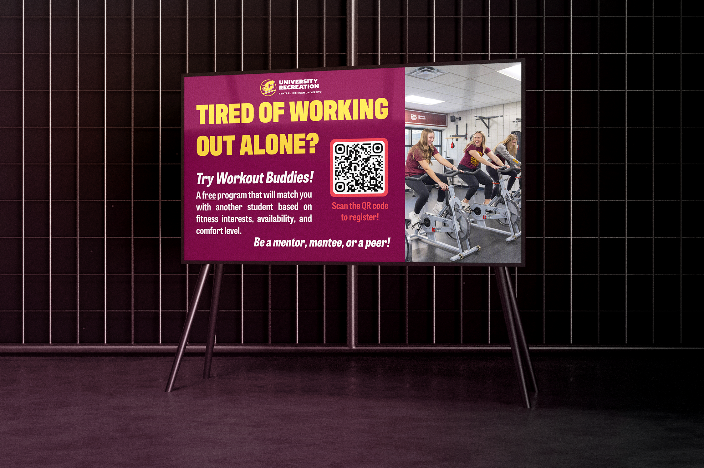
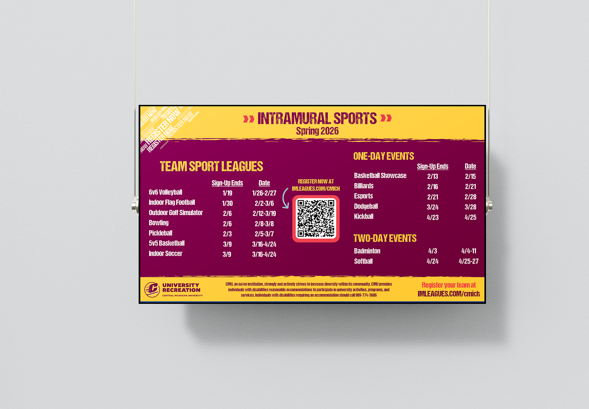
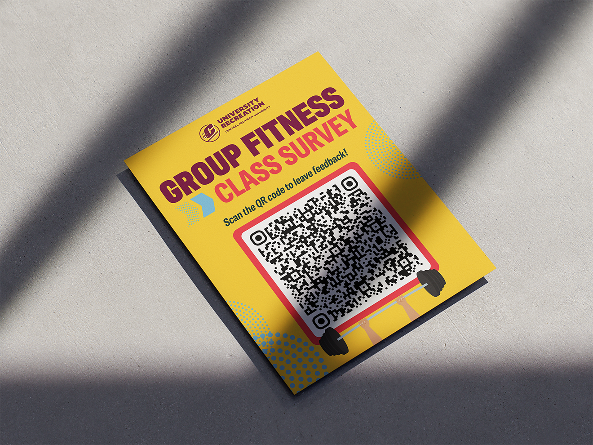
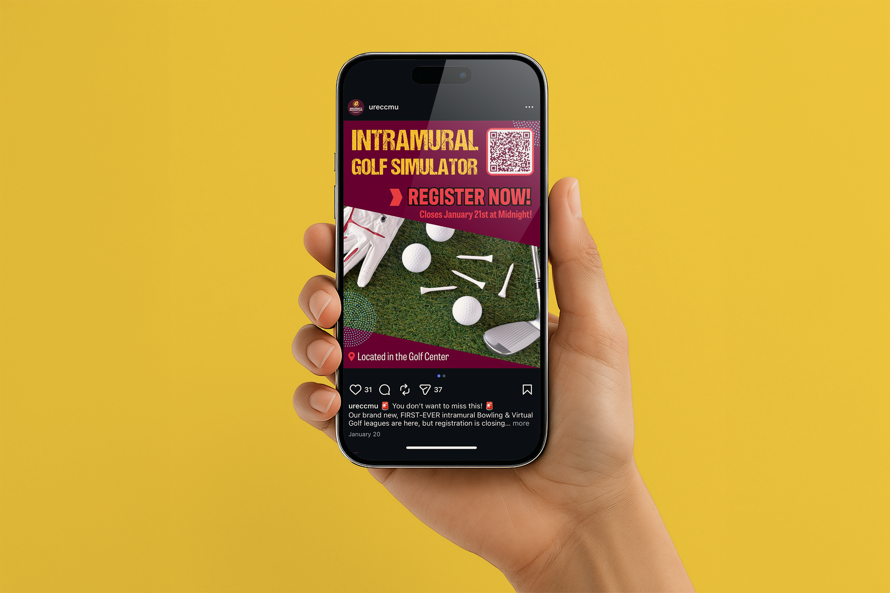

These are a multitude of works, some print and some digital, that I completed for the University Recreation department at Central Michigan University. Included here are two 1920 x1080 graphics that I did for the digital displays in the Student Activity Center. Often, the content we put up there has to be eye-catching and bold to catch the attention of a passer-by. Other works include the Group Fitness survey flyer that was placed in various locations in the SAC. For this, the QR code was the most important part of the flyer, and I made it large so that it would be easier for people to scan on their phones. I also work on social media posts for Instagram, Facebook, and X, and one of those is included here, advertising the Golf simulator intramural team. Lastly, there is the newsstand ad that I completed that includes photos of the various activities that members can do at the SAC. These would go on the front of the news racks that hold physical copies of CMLife, the campus newspaper. They are located all around the campus, appearing in different buildings.